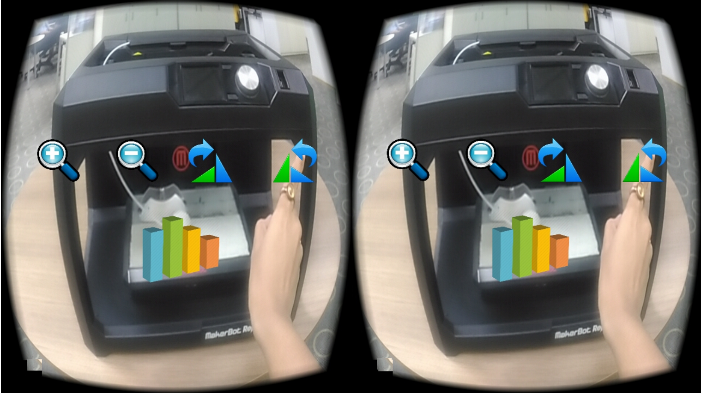
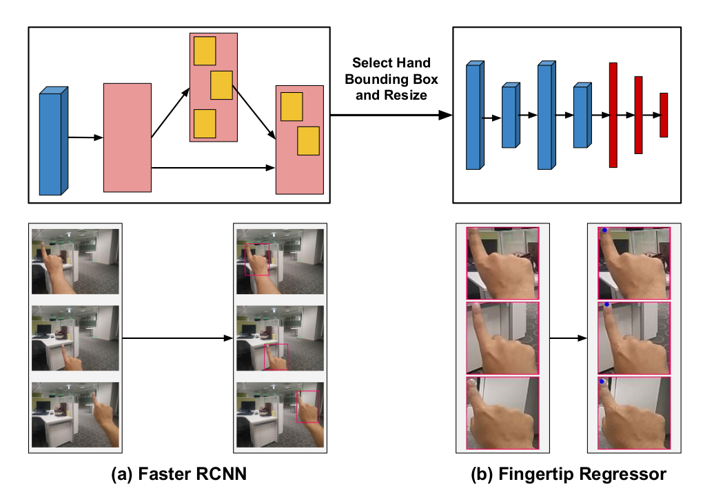
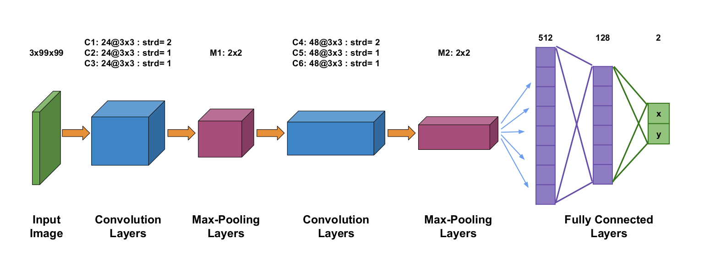

Abstract
With data growing at a huge rate, there arises a need for advanced data visualization techniques. Visualizing these data sets in Mixed Reality(MR) mode provides an immersive experience to the user in the context of the real world applications. Most of the existing works can only be used with inordinately priced devices such as Microsoft HoloLens, Meta Glass that use proprietary hardware for data visualization and user interaction through hand gestures. In this paper, we demonstrate a cost-effective solution for data visualization using frugal devices such as Google Cardboard, VR Box etc in MR mode. However, these devices still employ only primitive modes of interaction such as the magnetic trigger, conductive lever and have a limited user-input capability. To interact with visualizations and facilitate rich user experience, we propose the use of intuitive point- ing fingertip gestural interface in the user’s Field of View(FoV). The proposed pointing hand gesture recognition framework is driven by cascade of state-of-the-art models - Faster RCNN for localizing the hand followed by a proposed regression CNN for fingertip localiza- tion. We also demonstrate the performance of our proposed method in terms of recognition accuracy and computational time. A user study is also conducted and reported to demonstrate the user comfort and effectiveness in using the interactive interface developed.

Key Contribution
- We explored the potential of finger tracking for canonical operations like translation, rotation and scaling.
- Introduction of visualisation of big data and inculcating virtual button overlays in stereoscopic view for some other serious tasks
The Idea
In this work, we present a neural network architecture comprising of a hand detection model followed by a Fingertip detection model. The Fingertip detection model output spatial location of fingertip. The details of the CNN + Fingertip detection Model network is mentioned in the figure below.

Figure below shows the overview of our proposed fingertip regressor architecture for fingertip localization. The input to the network is 3x99x99 sized RGB images. The proposed architecture consists of two convolutional blocks each with three convolutional layers followed by a max-pooling layer. Finally, we use three fully connected layers to regress over two coordinate values of fingertip point at the last layer. Since the aim is to determine continuous valued outputs corresponding to fingertip positions.
